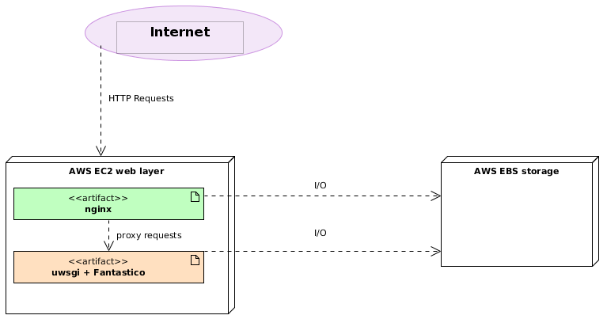

Low usage AWS¶
This scenario is a little bit more complex than Low usage (simplest scenario) but it provides some advantages:
| Advantages | Disadvantages |
|---|---|
| Can be autoscaled. | Requires AWS EC2 instances |
| Easier crash recovery | Requires manual configuration |
| Very easy monitoring support (CloudWatch) | Requires AWS EBS. |
| Requires some AWS know how. | |
| Static files are not served from a cdn. |
This scenario is recommended if you want to rollout you application on AWS infrastructure. Usually it is non expensive to do this as it requires micro instances and low cost storage. For more information about AWS required components read:
Setup¶
- Create an AWS account. (AWS Getting Started).
- Create an EC2 instance from AWS Management Console (EC2 setup).
- SSH on EC2 instance.
- Install Fantastico framework on the production machine (Installation manual.).
- Goto $FANTASTICO_ROOT/deployment
- sh setup_low_usage_<os_distribution).sh (e.g sh setup_low_usage_ubuntu.sh)
- Done.
Optimization¶
This scenario can be easily optimized by using AWS S3 buckets for static files. This ensures faileover for static files and very easy horizontal scaling for sites. Below you can find the new diagram:

You can read more about AWS S3 storage on http://aws.amazon.com/s3/. In this version of fantastico there is no way to sync static module files with S3 buckets. This feature is going to be implemented in upcoming Fantastico features. As a workaround you can easily copy static folder content from each module on S3 using the tool provided from AWS Management Console.
You can see how to use AWS Management Console S3 tool on http://www.youtube.com/watch?v=1qrjFb0ZTm8
Setup with S3¶
- Create an AWS account. (AWS Getting Started).
- Create an EC2 instance from AWS Management Console (EC2 setup).
- SSH on EC2 instance.
- Install Fantastico framework on the production machine (Installation manual.).
- Goto $FANTASTICO_ROOT/deployment
- sh setup_low_usage_s3_<os_distribution).sh (e.g sh setup_low_usage_s3_ubuntu.sh)
- Done.